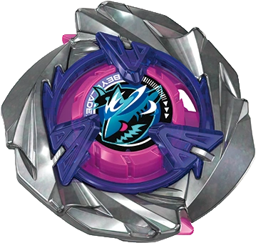

零件图鉴
Blade、Ratchet、Bit 与 CX 零件数值。
03 / PART TELEMETRY
零件数值图鉴
274 PART RECORDS · MEASURED / CATALOGUED
重量为目录值或玩家实测参考；同款零件会有制造公差。比赛前请以手上实物与当地规则为准。
COMPETITIVE ROTATION INTELLIGENCE · WBO DATA
集中查看 BEYBLADE X 赛事上位配置、零件实测数值，并在 3on3 组装台即时计算整颗陀螺的数据与套组合法性。

Blade、Ratchet、Bit 与 CX 零件数值。
274 PART RECORDS · MEASURED / CATALOGUED
重量为目录值或玩家实测参考；同款零件会有制造公差。比赛前请以手上实物与当地规则为准。